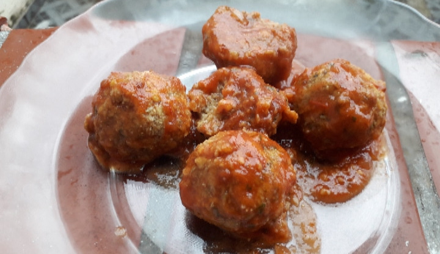

Almôndega de Lentilha
Boa noite galerinha!!! No feriadão de carnaval, eu testei uma receita de almôndega de lentilha fenomenal!!!
A receita foi tirada do canal de youtube Brunna Schnorr. O link do vídeo é:
Link

Ingredientes
- 500g de lentilha
- ½ xícara de cebola cortada em partes de 1/8
- 2 dentes de alho
Temperos (não precisam ser exatamente estes)
- ½ colher de sopa de curry
- 2 colheres de sopa de orégano
- 1 colher de sopa de sal
- ¼ de xícara de farelo de aveia
Opcional
- 1kg de farinha de linhaça ou farinha de rosca
- Molho de sua preferência (mostarda, molho de tomate)
Preparação
- Coloque os 500g de lentilha de molho de um dia para outro
- Escorra a lentilha e lave-a
- Num processador, bata 4 xícaras da lentilha junto com a cebola e o alho. A massa tem que ficar um farelo
- Caso você só tenha liquidificador, deixe a cebola e o alho picadinhos antes de colocar no liquificador.
Coloque a lentilha de pouco em pouco, para não sobrecarregar o liquidificador
- Acrescente um pouco de água para o liquidificador conseguir bater a lentilha
- Tire a mistura do processador. Coloque em uma tapuer ou travessa
- Acrescente os temperos na massa e misture
- Acrescente o farelo de aveia e misture
- Caso a massa esteja muito mole (por conta da água do liquidificador, coloque mais farelo de aveia)
- Deixe a mistura descansar na geladeira por 20 min
- Faça as bolinhas do tipo almôndegas e empane-as na farinha de linhaça, ou na de rosca, ou se quiser,
nem precisa empaná-las
- Coloque as bolinhas no forno pré-aquecido a 220°C por 15 minutos
- Sirva com o molho de sua preferência